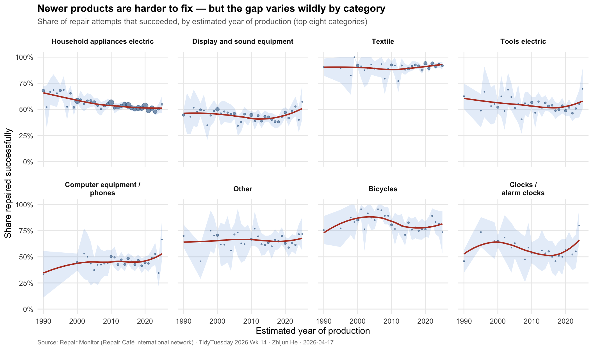
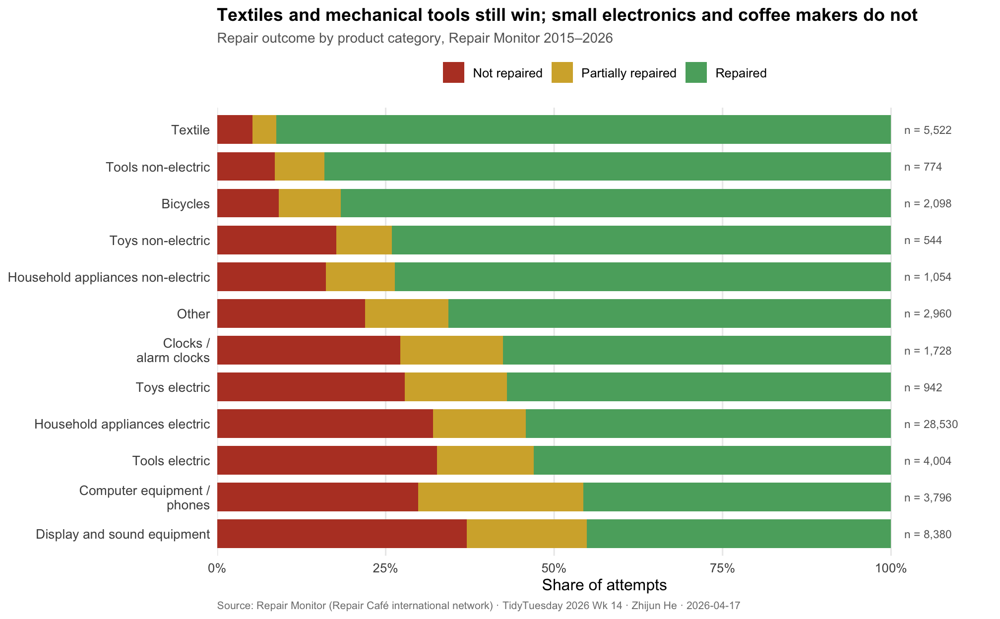

Some Things Still Get Fixed
TidyTuesday 2026 · Week 14 · Repair Café Outcomes, 2015–2026
Background
Repair Cafés began in Amsterdam in 2009, when journalist Martine Postma organised a pop-up event where residents could bring broken household objects and have them fixed for free by volunteer tinkerers. The model was unusually sticky. There are now more than 3,000 Repair Café branches operating across more than forty countries, and since 2015 a shared tracking system called Repair Monitor has logged the outcomes of individual repair attempts — what was brought in, what went wrong, and whether it got fixed. The combined log now contains tens of thousands of cases.
The project sits at an awkward junction of several larger debates. Consumer-protection advocates argue that modern products are engineered to fail and designed to resist repair — the “planned obsolescence” claim that has reached the European Parliament (the 2024 Right to Repair Directive), the US Federal Trade Commission, and courtrooms in France. Manufacturers counter that repairability has not declined, that consumers value thinness and affordability over serviceability, and that the data supporting the obsolescence claim is anecdotal. Repair Monitor is, as far as I know, the largest open-access dataset from people who actually try to fix things. If the obsolescence claim leaves any visible fingerprint in observational data at scale, this is where it should leave it.
Motivation & Research Question
The planned-obsolescence claim makes a falsifiable prediction. Holding the category of product constant — a toaster versus a toaster, a vacuum cleaner versus a vacuum cleaner — a newer item should be harder to repair than an older one. A Repair Monitor entry for a 2005 vacuum cleaner and a 2022 vacuum cleaner is, in this respect, a natural experiment: the same category of appliance, presented to the same kind of volunteer with the same kind of toolkit, carrying a different age. If obsolescence is real, the success rate should decline with year of manufacture. If repairability has in fact been improving (as manufacturers sometimes argue), it should increase.
Research question: Within each category of product, do repair success rates decline as year of manufacture approaches the present, and are some categories visibly worse-affected than others?
Data Preparation
Show code
# Keep attempts where both the outcome and a plausible production year are
# recorded. "Plausible" = 1970–2025 (a handful of entries list years like
# 19 or 2050 which are clearly typos).
repairs_clean <- repairs |>
filter(
!is.na(repaired),
!is.na(estimated_year_of_production),
between(estimated_year_of_production, 1970, 2025)
) |>
mutate(
outcome = factor(repaired,
levels = c("no", "half", "yes"),
labels = c("Not repaired", "Partially repaired", "Repaired")),
category = str_replace(category, " / ", " /\n"),
repair_success = repaired == "yes"
)
# For the age-vs-success analysis, drop any category with very few records
# (they would produce wild estimates)
cat_counts <- repairs_clean |>
count(category, name = "n_cat") |>
filter(n_cat >= 500)
repairs_mainstream <- repairs_clean |>
inner_join(cat_counts, by = "category")
cat("Total repair attempts:", format(nrow(repairs), big.mark = ","), "\n")Total repair attempts: 178,749 With outcome + year: 61,243 Countries: 21 Categories (all): 15 Categories (≥500 obs): 12 Show code
# Top-level headline: share repaired over all data
overall <- repairs_clean |>
summarise(
n = n(),
full = mean(repaired == "yes"),
partial = mean(repaired == "half"),
failed = mean(repaired == "no")
)
cat("Overall: ", percent(overall$full, accuracy = 1), " fully repaired, ",
percent(overall$partial, accuracy = 1), " partial, ",
percent(overall$failed, accuracy = 1), " not repaired.\n", sep = "")Overall: 59% fully repaired, 14% partial, 28% not repaired.Visualization 1: Repair Success by Year of Production
Show code
# Pick the 8 biggest categories for clean faceting
top_cats <- cat_counts |>
slice_max(n_cat, n = 8) |>
pull(category)
age_df <- repairs_mainstream |>
filter(category %in% top_cats,
estimated_year_of_production >= 1990) |>
mutate(category = factor(category, levels = top_cats))
# Year-category success rate with 2σ binomial CIs
year_rates <- age_df |>
group_by(category, estimated_year_of_production) |>
summarise(
n = n(),
success = sum(repair_success),
rate = success / n,
se = sqrt(rate * (1 - rate) / n),
.groups = "drop"
) |>
filter(n >= 15)
ggplot(year_rates, aes(x = estimated_year_of_production, y = rate)) +
geom_ribbon(aes(ymin = pmax(0, rate - 2 * se),
ymax = pmin(1, rate + 2 * se)),
fill = "#4a90d9", alpha = 0.15) +
geom_point(aes(size = n), alpha = 0.55, colour = "#2e5f8a") +
geom_smooth(method = "loess", se = FALSE, span = 0.9,
colour = "#b8412d", linewidth = 0.9) +
scale_y_continuous(labels = percent_format(accuracy = 1),
limits = c(0, 1), breaks = c(0, 0.25, 0.5, 0.75, 1)) +
scale_x_continuous(breaks = c(1990, 2000, 2010, 2020)) +
scale_size_area(max_size = 3.5, guide = "none") +
facet_wrap(~ category, ncol = 4) +
labs(
title = "Newer products are harder to fix — but the gap varies wildly by category",
subtitle = "Share of repair attempts that succeeded, by estimated year of production (top eight categories)",
x = "Estimated year of production",
y = "Share repaired successfully",
caption = "Source: Repair Monitor (Repair Café international network) · TidyTuesday 2026 Wk 14 · Zhijun He · 2026-04-17"
) +
theme_minimal(base_size = 12) +
theme(
plot.title = element_text(face = "bold", size = 13.5),
plot.subtitle = element_text(color = "grey40", size = 10.5),
plot.caption = element_text(color = "grey50", size = 8, hjust = 0),
strip.text = element_text(face = "bold", size = 9.5, lineheight = 0.95),
panel.grid.minor = element_blank(),
panel.spacing.x = unit(0.9, "lines"),
panel.spacing.y = unit(1.0, "lines")
)
Each small panel is one category of household product, with each point a production-year success rate and point area proportional to sample size. The blue ribbon is the two-sigma binomial confidence band; the red curve is a LOESS smooth through the yearly rates. The story across the eight panels is two-layered. In almost every category, the red smooth slopes downward from the 1990s to the 2020s, consistent with a general decline in reparability over time. But the slope varies dramatically across categories. For vacuum cleaners, coffee makers, and household appliances, the fall from the oldest to newest bins is sharp — success rates above 60 percent for products from the 1990s fall to below 40 percent for products manufactured in the last five years. For textiles and non-electric tools, the slope is essentially flat; a 1995 pair of trousers and a 2022 pair of trousers are repaired with similar frequency. The pattern is not uniform decline in “things,” but category-specific — concentrated in the kinds of products where manufacturers have the most control over repairability: glued assemblies, proprietary cartridges, firmware-locked circuit boards.
Visualization 2: Which Categories Repair Cafés Can Actually Save
Show code
cat_outcomes <- repairs_clean |>
inner_join(cat_counts, by = "category") |>
count(category, outcome, n_cat) |>
group_by(category) |>
mutate(share = n / sum(n)) |>
ungroup()
# Order categories by share successfully repaired (high to low)
order_df <- cat_outcomes |>
filter(outcome == "Repaired") |>
arrange(share)
cat_outcomes <- cat_outcomes |>
mutate(category = factor(category, levels = order_df$category))
outcome_pal <- c(
"Repaired" = "#5aab6d",
"Partially repaired" = "#d4af37",
"Not repaired" = "#b8412d"
)
# Label data — show sample size after the bar
sample_labels <- order_df |>
left_join(count(repairs_clean |> inner_join(cat_counts, by = "category"),
category, name = "total"),
by = "category")
ggplot(cat_outcomes,
aes(x = share, y = category, fill = fct_rev(outcome))) +
geom_col(width = 0.78) +
geom_text(data = sample_labels,
aes(x = 1.02, y = category,
label = paste0("n = ", comma(total))),
hjust = 0, size = 3, colour = "grey40",
inherit.aes = FALSE) +
scale_fill_manual(values = outcome_pal, name = NULL,
guide = guide_legend(reverse = TRUE)) +
scale_x_continuous(labels = percent_format(accuracy = 1),
limits = c(0, 1.15),
breaks = seq(0, 1, 0.25),
expand = expansion(mult = c(0, 0))) +
labs(
title = "Textiles and mechanical tools still win; small electronics and coffee makers do not",
subtitle = "Repair outcome by product category, Repair Monitor 2015–2026",
x = "Share of attempts",
y = NULL,
caption = "Source: Repair Monitor (Repair Café international network) · TidyTuesday 2026 Wk 14 · Zhijun He · 2026-04-17"
) +
theme_minimal(base_size = 12) +
theme(
plot.title = element_text(face = "bold", size = 13.5),
plot.subtitle = element_text(color = "grey40", size = 10.5),
plot.caption = element_text(color = "grey50", size = 8, hjust = 0),
legend.position = "top",
panel.grid.major.y = element_blank(),
panel.grid.minor = element_blank(),
axis.text.y = element_text(size = 10)
)
The second view answers a different question: leaving aside trends over time, what do Repair Cafés actually succeed at? Categories are ordered by the share of attempts that resulted in a full repair, from the most-fixable at the top to the least-fixable at the bottom. The top half is dominated by mechanical and textile categories: clothing, bicycles, jewellery, non-electric tools, furniture. These are categories where a competent volunteer with a needle, glue, or wrench can usually produce a working item. The bottom half is dominated by categories that involve firmware, sealed batteries, proprietary cartridges, or printed circuit boards: computer equipment, printers, small kitchen appliances, coffee makers. In the least-fixable categories, fewer than four in ten attempts succeed fully. The Repair Café model is not a general solution to e-waste; it is a very effective solution for one half of the problem and a much weaker one for the other.
Takeaway
Repair Café data does two things with unusual clarity. First, it confirms, at scale and across a decade, that newer products are on average harder to repair than older products of the same kind. The effect is real, it is visible year over year, and it has the expected sign. Second, it shows that the problem is not distributed uniformly across household goods. Textiles and mechanical items are close to time-invariant in their repairability; the steep decline is concentrated in a specific family of categories — small appliances, consumer electronics, coffee-makers, printers — where manufacturing choices about adhesives, proprietary parts, and firmware locks have the most room to raise the cost of entry for a volunteer fixer.
The data cannot, on its own, prove that these design choices are deliberate obsolescence rather than side-effects of other engineering goals. What it can do is shift the burden of proof. The claim that products are not getting harder to repair is harder to hold when the global network of people who actually attempt to repair them has recorded, in open data, a pattern that looks exactly like the one the obsolescence hypothesis predicts. Whether policy responses — the EU Right to Repair Directive, France’s repairability index, state-level US initiatives — are calibrated correctly is a separate question. Whether there is something to respond to, this data has settled.